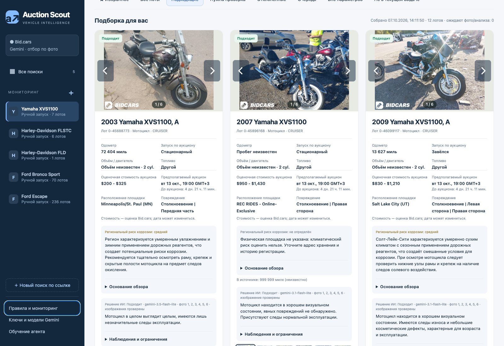
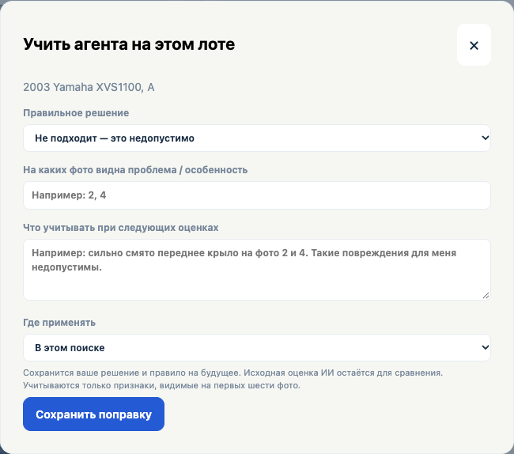
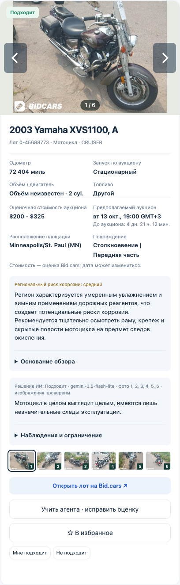
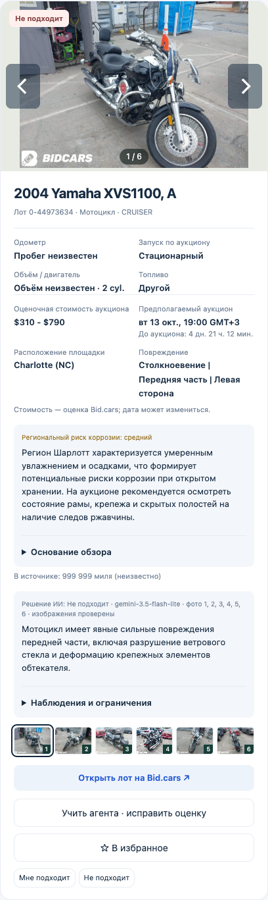
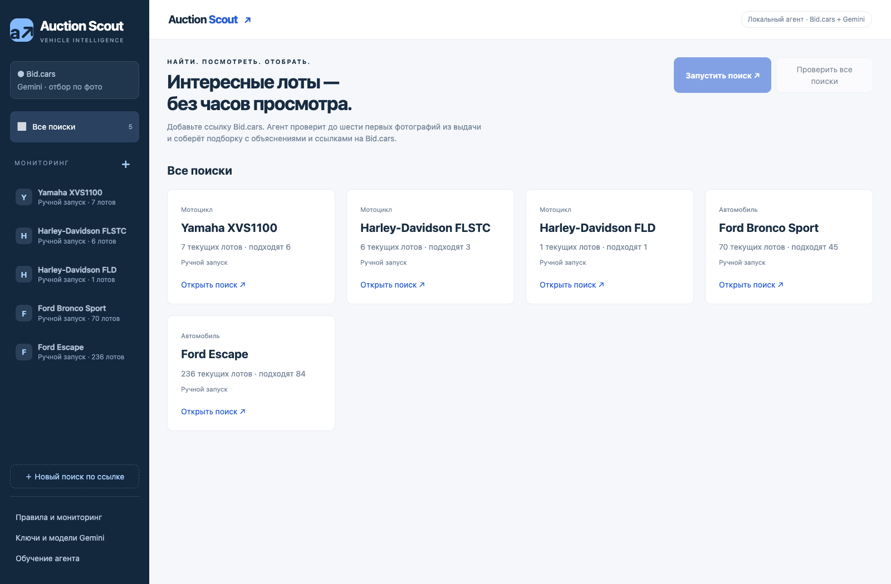

AUCTION SCOUT / AI-АГЕНТ ДЛЯ ЗАКАЗЧИКА
Аукционные авто и мотоциклы —
по критериям заказчика.
Агент отслеживает объявления Bid.cars, собирает сведения о лотах и анализирует фотографии через Gemini. В подборку попадают варианты без видимых повреждений или с небольшими повреждениями, которые допускает заказчик. Дальше человек рассматривает уже отобранные предложения.
Готовый проект · протестирован заказчиком
Посмотреть интерфейс ↓
01 / ЗАДАЧА
Отслеживать подходящие варианты, а не просматривать всю выдачу
Заказчику нужен регулярный отбор автомобилей и мотоциклов по собственным условиям. Обычные фильтры помогают найти модель, но не определяют, допустимы ли видимые повреждения. Требовался агент, который сам просматривает доступные объявления и фотографии, применяет заданные критерии и выдаёт подходящие лоты с объяснениями.
02 / РЕШЕНИЕ
Поиск и первичный отбор выполняет агент
03 / ОБРАТНАЯ СВЯЗЬ
Корректировать агента под свои требования
Если агент понял условие слишком строго или слишком широко, заказчик открывает лот, указывает правильное решение и объясняет, что нужно учитывать. Поправку можно связать с конкретными фотографиями и применить к одному поиску или ко всем поискам автомобилей либо мотоциклов. Сохранённые правила используются в следующих запросах к LLM; исходная оценка остаётся доступной для сравнения.
Это обучение через память предпочтений и уточнение инструкций, без переобучения весов Gemini.

04 / ИНЖЕНЕРИЯ
От анализа фотографий до устойчивого рабочего процесса
05 / РЕЗУЛЬТАТ
Подборка с основаниями каждого решения
Заказчик работает с отобранными вариантами: рассматривает фотографии, сверяет характеристики и открывает исходный лот. Решения агента доступны для проверки и корректировки — отсеянные предложения не скрываются безвозвратно.



Проверка перед публикацией: 76 автоматических тестов пройдены. Все изображения на странице — снимки настоящего интерфейса с сохранёнными лотами и ответами Gemini, а не макеты.
Агент оценивает признаки, видимые на фотографиях; технический осмотр остаётся необходимым. Фото для анализа отправляются Gemini. Проверки по расписанию выполняются при запущенном приложении и работающем компьютере.
Интерфейс приложения — на русском. Описание проекта подготовлено на русском и английском.